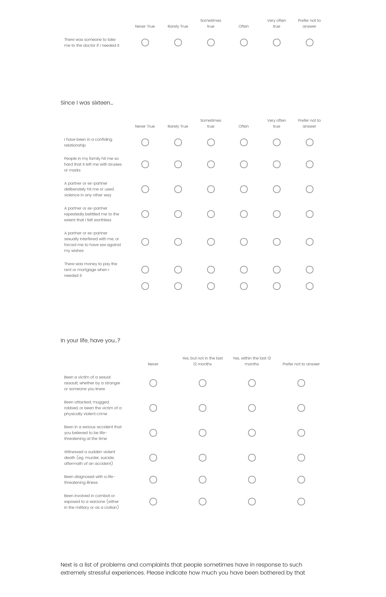
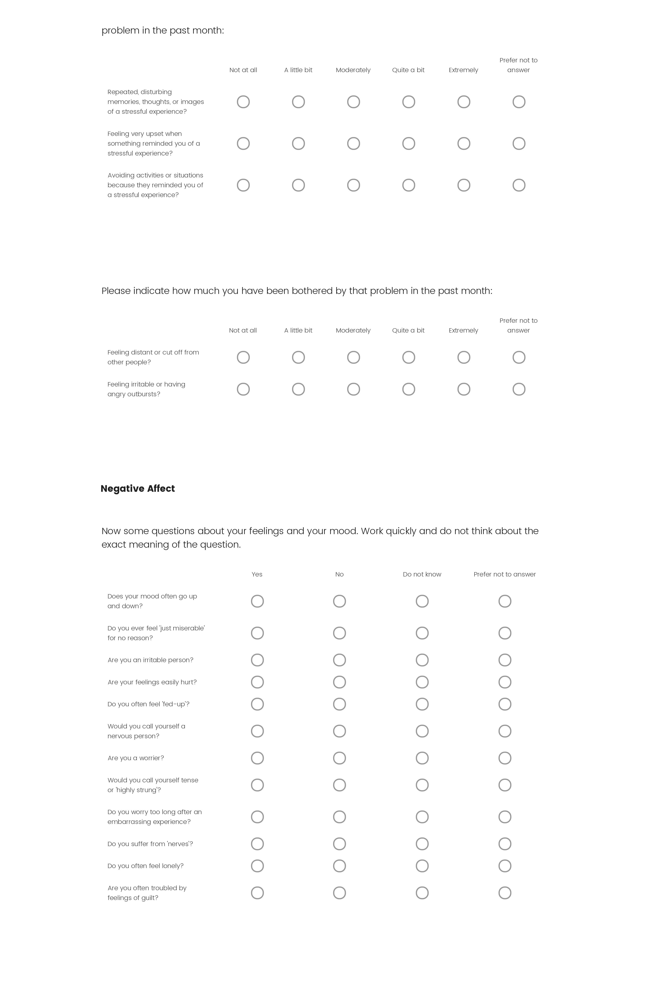
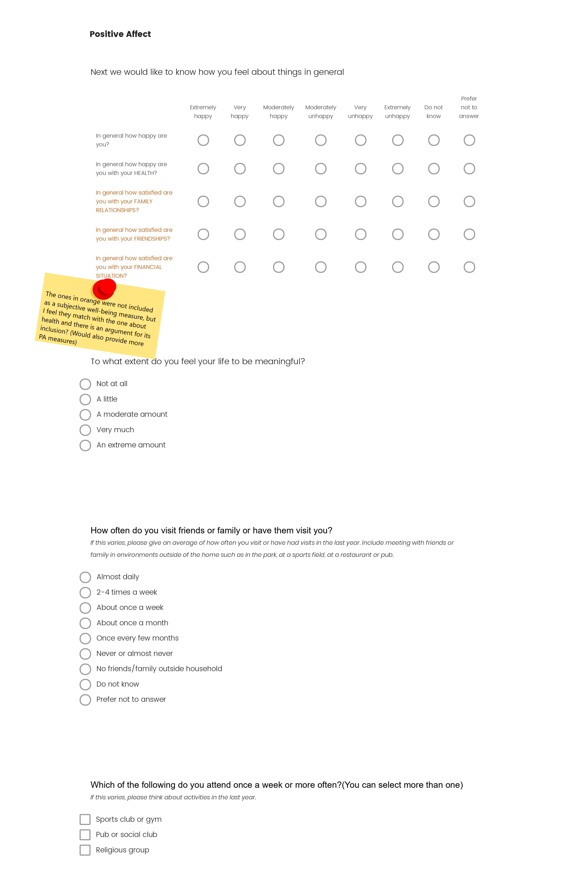
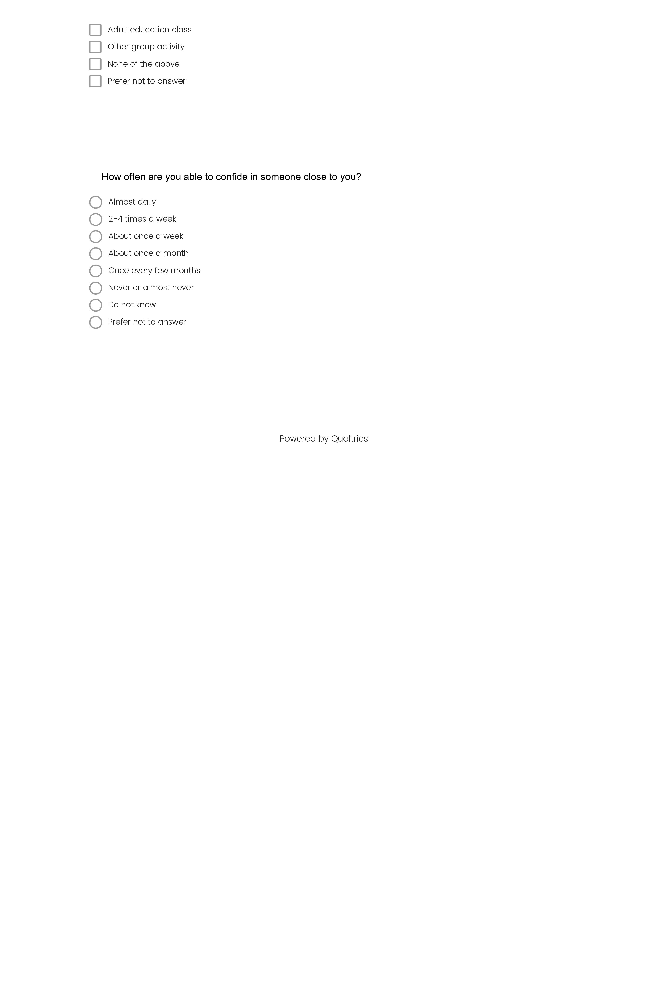
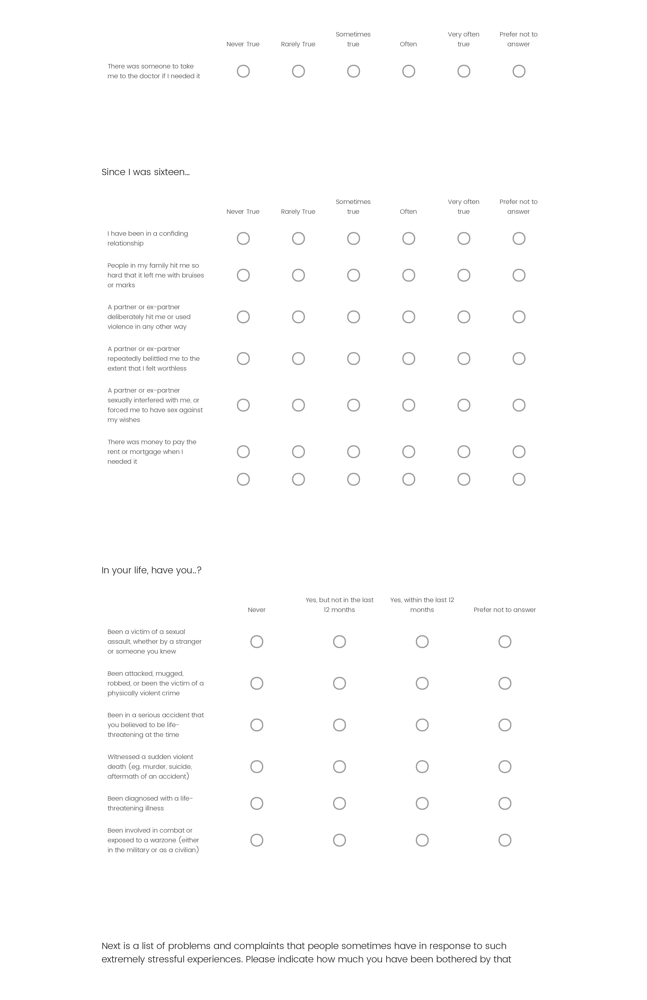
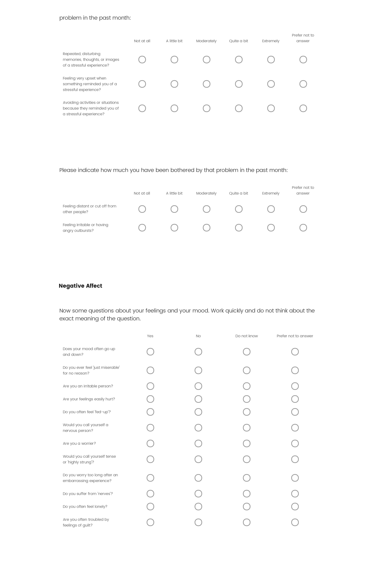
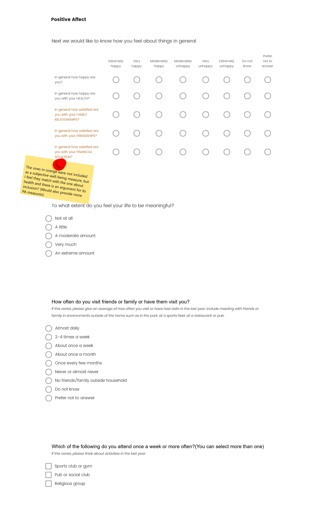
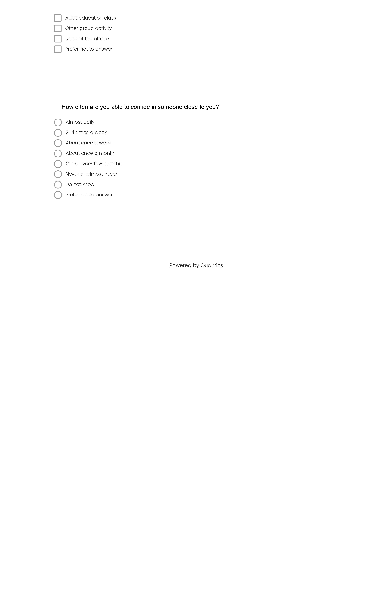

Section 5 Prelim Prep
5.1 Task List:
☑ Request UKB data
☑ Put together rough draft of survey
☑ Request CD-RISC access
☑ Send committee member requests
☐ Work on outline (Scrivener?)
☑ Set up new Git repo
☐ Bioinformatic/annotation decisions(Aim 3)
SNP+based enrichment analysis
GTEx
Genome Browser
SNPnexus
VarioWatch
    
   